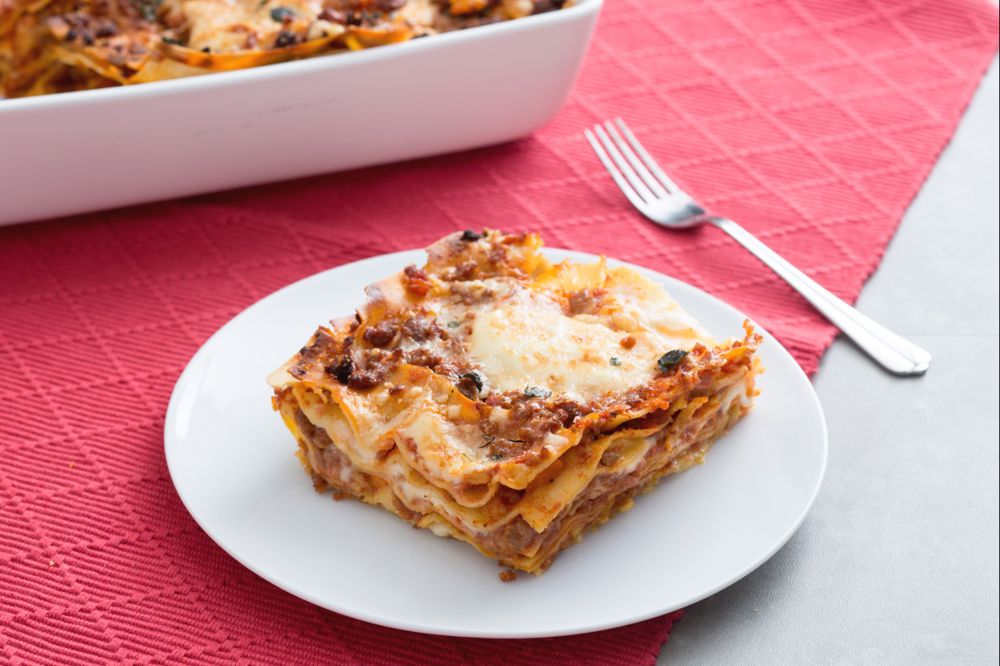

Lasagne with Sausage Ragu Recipe

Description
Ragu alla bolognese is surely one of the best-loved sauces when it comes to making lasagne. But this week, for Sunday lunch, we’ve got an ace up our sleeve.
Your friends and family will be wowed when you place a steaming pan of this lasagne with sausage ragu on the table! Sausage is much more flavorful than ground meat,
plus it doesn’t crumble apart once cooked like ground meat does; it stays dense and with every bite, it gives you a truly special flavor and nuance. Even though the
sausages you can find might vary from place to place and some contain more spices than others, don’t worry – whichever kind you use, this dish is bound to be a hit!
The layers of pasta alternate with layers of the ragu and creamy béchamel sauces, just like in the traditional lasagne recipes... but do you prefer to follow tradition to
the letter or are you open to putting a little twist on it, as we’ve done here? And if you happen to end up with some leftover sausage ragu, try using it on bucatini pasta!
Ingredients
- Green egg lasagna sheets 0.5 lb (250 g)
- Thyme to taste - (fresh)
- Grana Padano PDO cheese 5 tbsp
- Oregano to taste - (fresh)
- Whole milk 4 cups (1 l)
- Flour 00 2.6 cups (100 g)
- Fine salt to taste
- Butter 7 tbsp (100 g)
- Nutmeg to taste
- Sausage 1.75 lbs (800 g)
- Celery 1 stalk
- Carrots 1
- Extra virgin olive oil to taste
- Black pepper to taste
- Tomato puree 7 oz (450 g)
- Onions 1
- Red wine 1 glass
- Fine salt to taste
Steps
- To make the lasagne with sausage ragu, first peel the carrot, onion, and celery and chop them roughly. Add a couple of tablespoons of olive oil to a frying pan, then add the chopped vegetables and brown over high heat for at least 5 minutes.
- Meanwhile, take the sausage, make an incision in the skin and remove it carefully using your hands. Once the vegetables have turned golden brown, add the sausage to the pan,
- increase the heat, and break up the sausage using a wooden spoon. Let it brown for about 5 minutes. Then, pour in the red wine and simmer until it evaporates completely. Next, add the tomato puree,
- season with salt and pepper, and stir to combine. Cover the pan with a lid and cook for about 10 minutes.
- In the meantime, start making the béchamel sauce: Pour the milk into a saucepan, season with salt and add the nutmeg, then bring to a boil. Melt the butter in another small saucepan, then sprinkle in the flour,
- stirring quickly using a whisk. Next, add the hot milk and, stirring continuously, cook the béchamel until it has thickened.
- Once the ragu is ready, all you have to do is assemble the lasagne. Spread a little béchamel on the bottom of a 9x13 inch (20x30 cm) pan and arrange the lasagne sheets on top. Cover with the sausage ragu, another layer of béchamel,
- and a tablespoon of grated Grana Padano cheese. Repeat these steps another five times, alternating the direction of the lasagne sheets each time.
- Once you’ve put the final layer of pasta in place, cover with the remaining ragu sauce, béchamel, and Grana Padano. Bake in a conventional oven preheated to 425°F (220°C) for 20 minutes, then switch to broil mode at the highest setting and cook for another 3 minutes.
- When the lasagne with sausage ragu is golden brown, take it out of the oven, decorate with oregano and thyme leaves, and serve!
Reference: "Lasagne with sausage ragu" by Giallo Zafferano